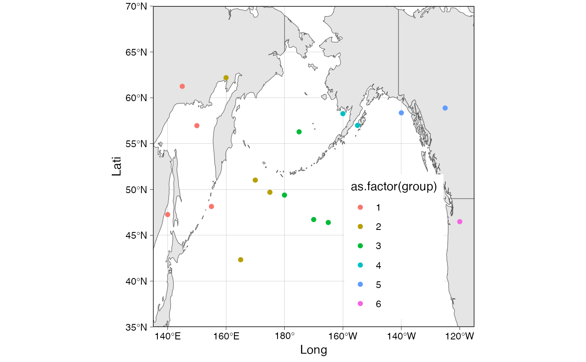

This function is intended to be used in two ways: first, to overlay a world map on an existing gg object, and second, to create a base world map using ggplot2.
wmap_sf(
sfmap = NULL,
sf_resol = 50,
pacific_centered = TRUE,
as_gg = TRUE,
lgl = NULL,
ltl = NULL,
lgb = NULL,
ltb = NULL,
...
)World map data in sf format, Default: NULL
Resolution of sf world map data passed to
rnaturalearth::ne_countries(scale), Default: 50 (medium).
If TRUE (default), the world map is centred on the Pacific Ocean; if FALSE, the world map is centred on the prime meridian (i.e. the meridian on Greenwich).
Whether or not to make a gg object, Default: TRUE
Longitude limits, Default: NULL
Latitude limits, Default: NULL
Longitude breaks, Default: NULL
Latitude breaks, Default: NULL
Arguments passed to geom_sf
gg or a list (LayerInstance)
If sfmap is NULL, the default map projection system is a geographic coordinate system based on the WGS84. It has not yet been checked whether there are any problems with other coordinate reference systems. See example and vignette("wmap_sf").
library(ggplot2)
library(frabento)
set.seed(180)
df <- data.frame(Long = seq(140, 240, by = 5),
Lati = runif(n = 21, min = 40, max = 65),
group = c(rep(1:5, each = 4), 6))
# plain world map as pacific centered (default)
wmap_sf()
#> Spherical geometry (s2) switched off
#> although coordinates are longitude/latitude, st_intersection assumes that they
#> are planar
#> Warning: attribute variables are assumed to be spatially constant throughout all geometries
#> Spherical geometry (s2) switched on
# plain world map as Greenwich centered
wmap_sf(pacific_centered = FALSE)
# Trim worldmap and overlay data points on worldmap
wmap_sf(lgl = c(135, 245), ltl = c(35, 70)) +
geom_point(data = df, aes(x = Long, y = Lati, color = as.factor(group)))
#> Spherical geometry (s2) switched off
#> although coordinates are longitude/latitude, st_intersection assumes that they
#> are planar
#> Warning: attribute variables are assumed to be spatially constant throughout all geometries
#> Spherical geometry (s2) switched on

# Trim world map and overlay worldmap on data points
ggplot() +
geom_point(data = df, aes(x = Long, y = Lati, color = as.factor(group))) +
wmap_sf(as_gg = FALSE, lgl = c(135, 245), ltl = c(35, 70))
#> Spherical geometry (s2) switched off
#> although coordinates are longitude/latitude, st_intersection assumes that they
#> are planar
#> Warning: attribute variables are assumed to be spatially constant throughout all geometries
#> Spherical geometry (s2) switched on